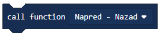

Detyrë - Para dhe Pas¶
Në aplikime më komplekse, është e nevojshme të kryeni një veprim disa herë, derisa të përmbushen disa nga kushtet për përfundimin e tij.

Ciklet sigurojnë mundësinë për të përsëritur sekuencën e të njëjtit kod derisa të përmbushet një prej kushteve për thyerjen e tij.
Drejtimi i ciklit mund të kontrollohet në një numër mënyrash:
Pafund (pa kufizime),
Sensori (funksionon derisa programi të reagojë te njëri prej sensorëve),
Koha (mund të jetë e kufizuar me kohë),
Me numërim (një numër herë që përsëritet mund të përcaktohet paraprakisht) dhe
Logjika (mund të funksionojë derisa të përmbushet një kusht logjik).
Ne së pari do t’i shpjegojmë ciklet në një shembull të thjeshtë të lëvizjes së pafundme të një roboti përpara dhe prapa.
Ne do ta zgjidhim këtë detyrë duke e ndarë atë në dy pjesë. Pjesa e parë do të përbëhet nga dy blloqe me të cilat roboti do të ecë përpara dhe prapa.
Zvarrit bllokun  në sipërfaqen e punës, klikoni në shenjën
në sipërfaqen e punës, klikoni në shenjën + dhe zgjidhni opsionin “rotation”. Pastaj, vendosni numrin e rrotullimeve në 1.
Më në fund, që roboti të ecë përpara, vlera (fuqia përfaqësuese) duhet të jetë pozitive, ne do ta vendosim atë të jetë 50.
Në bllokun e dytë, ne do të vendosim fuqinë e motorit të jetë -50, në mënyrë që roboti të lëvizë prapa. Për të lejuar që roboti të lëvizë vazhdimisht (pa ndalur), duhet ta vendosim bllokun e paraqitur më sipër në një cikël të pafund, do ta arrijmë këtë duke shtuar bllokun  , i cili do të mundësojë që roboti të shkojë përpara dhe prapa vazhdimisht (një numri i pafund i herave), derisa programi të ndalet me forcë.
, i cili do të mundësojë që roboti të shkojë përpara dhe prapa vazhdimisht (një numri i pafund i herave), derisa programi të ndalet me forcë.
Pamja e programit:

Lidhni EV3 Brick me kompjuterin përmes kabllit USB dhe shkarkoni skedarin .uf2 në kompjuterin tuaj duke klikuar butonin  . Duke tërhequr skedarin mbi EV3, është gati të fillojë punën.
. Duke tërhequr skedarin mbi EV3, është gati të fillojë punën.
Ne gjithashtu mund të kufizojmë lëvizjen e robotit; për shembull, ne duam që roboti të lëvizë përpara dhe prapa tre herë.
Për ta bërë këtë, ne do të përdorim cikël ku blloqet ekzekutojnë një numër të caktuar herë. Roboti do të ecë përpara dhe prapa tre herë.
Për të vendosur sekuencën e kodit për të ndaluar pas një numri të caktuar përsëritjesh, duhet të tërhiqni bllokun  , ku do të përcaktojmë se sa herë duhet të përsëritet një veprim, në bllokun |onstart| Në rastin tonë, vlera do të jetë 3.
, ku do të përcaktojmë se sa herë duhet të përsëritet një veprim, në bllokun |onstart| Në rastin tonë, vlera do të jetë 3.
Pamja e programit:

Lidhni EV3 Brick me kompjuterin përmes kabllit USB dhe shkarkoni skedarin .uf2 në kompjuterin tuaj duke klikuar butonin . Duke tërhequr skedarin mbi EV3, është gati të fillojë punën.
Mënyra e tretë për të përsëritur një veprim të caktuar është duke përdorur bllokun që do ta përsëris atë derisa të plotësohet një kusht i caktuar. Ky bllok duhet të përdoret kur nuk e dimë se sa herë na duhet të përsërisim një pjesë të kodit, kështu që duam që ai të vazhdojë të përsëritet derisa të përmbushet një kusht specifik.
Për të demonstruar përsëritjen e kushtëzuar, ne do të krijojmë një program i cili do të lejojë që roboti të lëvizë rreth një kuti në formën e një sheshi derisa të hasë një pengesë (prek kutinë).
Kodi duket si ky:

Lidhni EV3 Brick me kompjuterin përmes kabllit USB dhe shkarkoni skedarin .uf2 në kompjuterin tuaj duke klikuar butonin . Duke tërhequr skedarin mbi EV3, është gati të fillojë punën.
Kjo detyrë mund të zgjidhet duke përdorur funksionet.
Disa probleme komplekse mund të zgjidhen më lehtë nëse ato ndahen në njësi më të vogla që mund të zgjidhen në mënyrë të pavarur. Në gjuhët e tjera të programimit, këto njësi quhen nënprogram: funksione dhe procedura. Ne e dimë që ne mund të thjeshtojmë kodin duke përdorur komanda të përsëritjes. Sidoqoftë, kjo shpesh nuk është e mjaftueshme.
Kurdoherë që duam që roboti të përsërisë disa aktivitete brenda një programi, ose në një program tjetër, mund të përdorim procedura, ose më saktë, bllokun  .
.
Meqenëse në shembujt e mëparshëm kemi përdorur lëvizjen përpara dhe prapa të robotit, ne do të përpiqemi t’i përdorim këto dy blloqe për të krijuar funksionin tonë përpara dhe prapa. Si bëhet kjo?
Hapi i parë është krijimi i Funksionit me aktivitete që do të përsëriten. Në rastin tonë, ky do të jetë robot që shkon përpara dhe prapa në mënyrë të përsëritur.
Ne krijojmë një Funksion duke, duke hapur kategorinë Function (1), duke klikuar në butonin Make a Function` (2) dhe duke futur emrin e funksionit që do të donim të krijonim (3). Ne kemi përfunduar krijimin e një funksioni kur klikojmë në butonin ``OK (4).

Shtoni dy blloqet e lëvizjes, blloku i parë do të mundësojë që roboti të lëvizë një rrotullim përpara, dhe blloku i dytë do t’i mundësojë që të lëvizë një rrotullim prapa.
Pamja e funksionit para dhe pas:

Në mënyrë që një funksion të përdoret në një program, është e nevojshme ta “thirrni” atë duke përdorur bllokun .
Pamja e kodit për të ecur përpara dhe prapa duke përdorur funksionin:

Lidhni EV3 Brick me kompjuterin përmes kabllit USB dhe shkarkoni skedarin .uf2 në kompjuterin tuaj duke klikuar butonin . Duke tërhequr skedarin mbi EV3, është gati të fillojë punën.